Washington University Political Review (WUPR) is a student-run political publication at WashU covering domestic and international news, with each issue revolving around a central theme. As a design lead at WUPR, I largely focused on creating illustrations to accompany articles, as well as the occasional cover.
 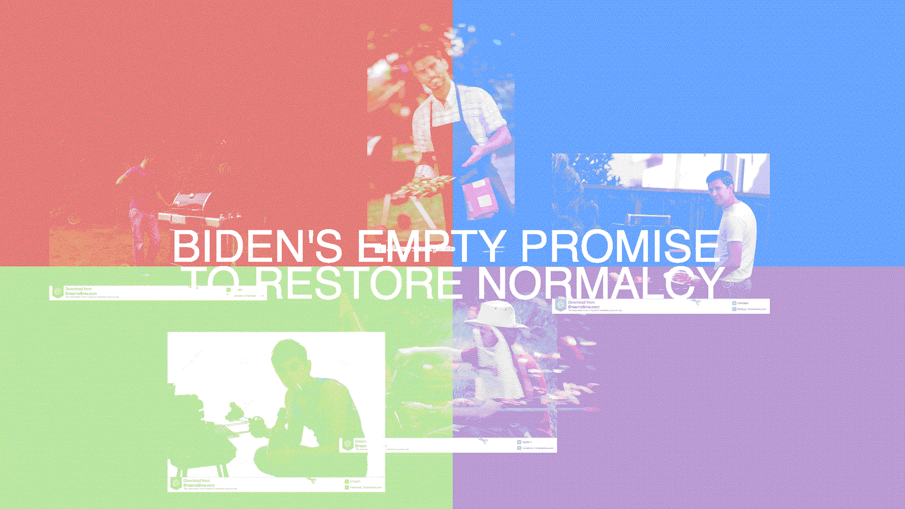
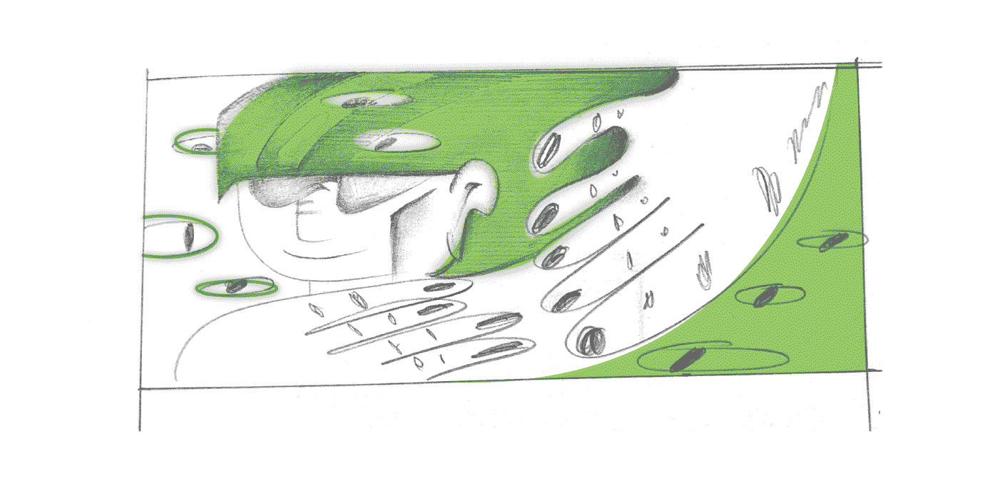
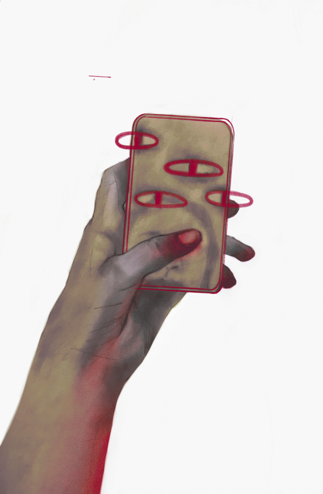
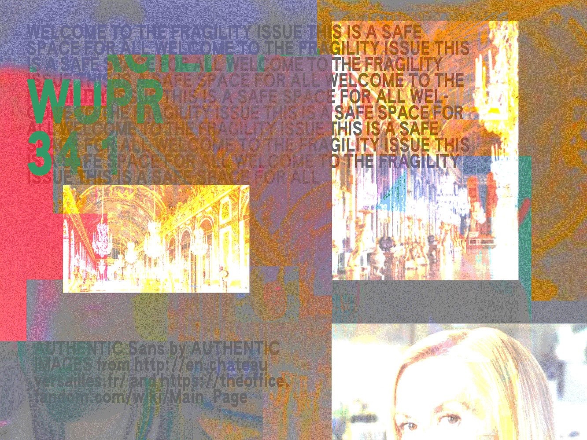
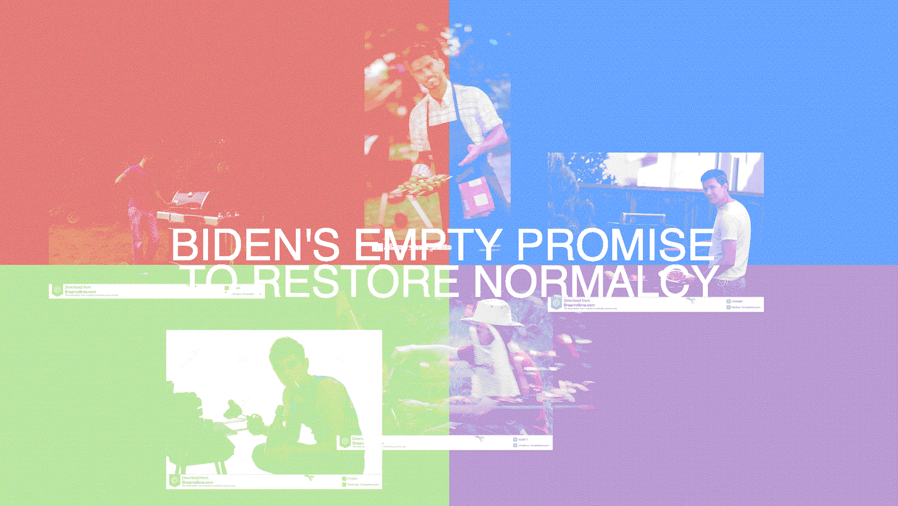
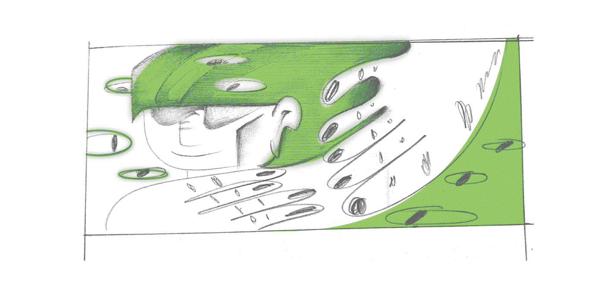
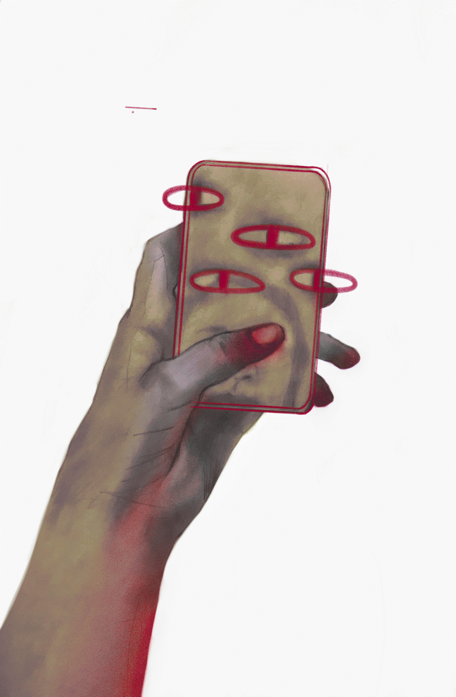
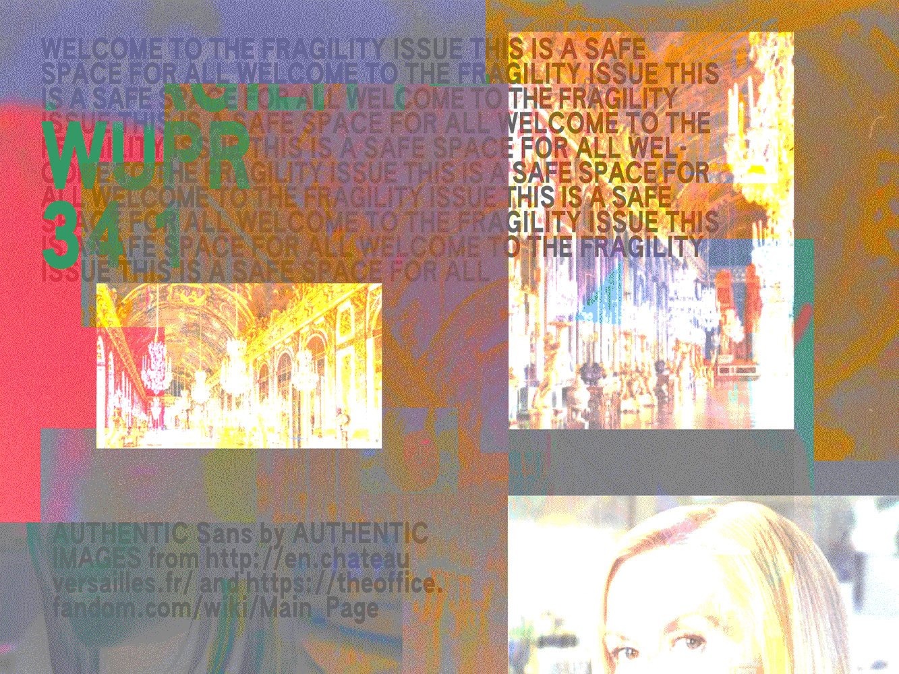
 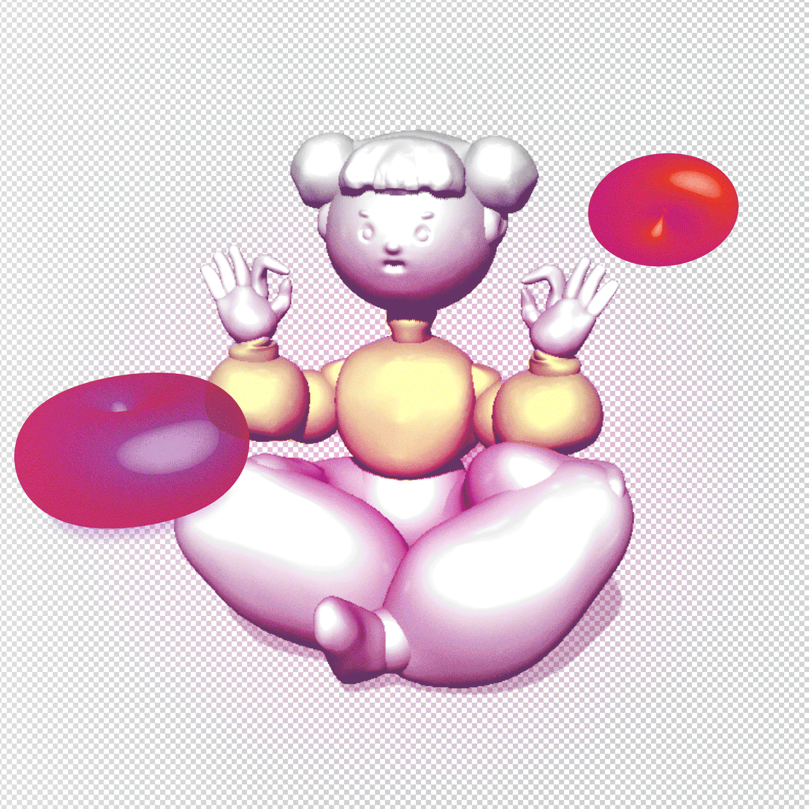
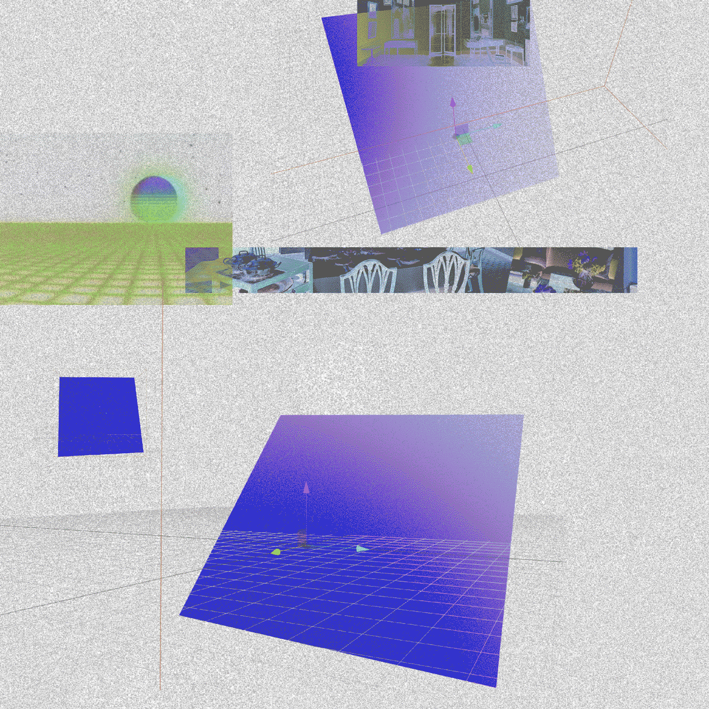
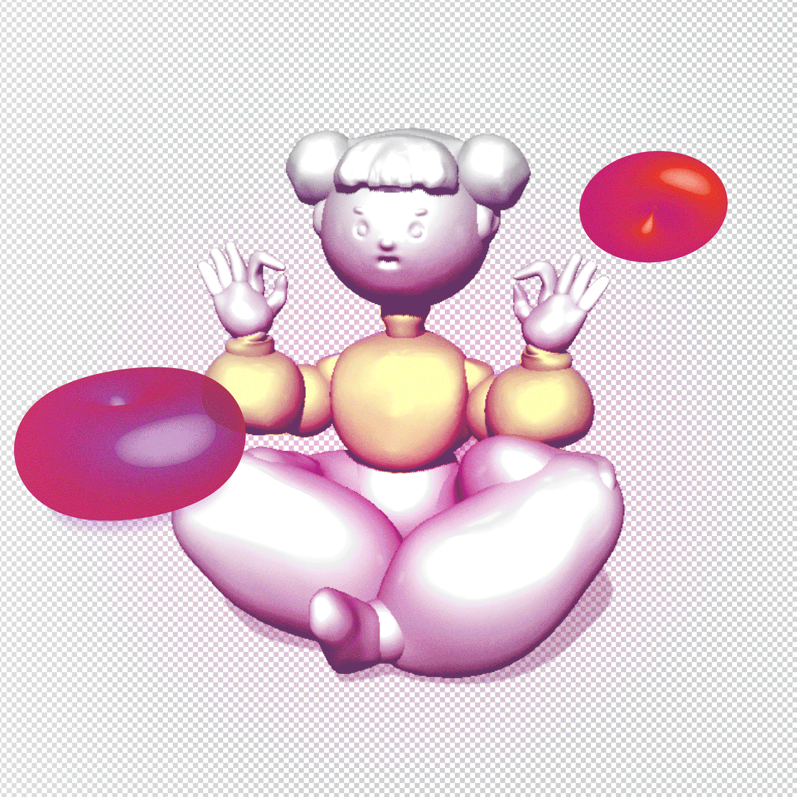
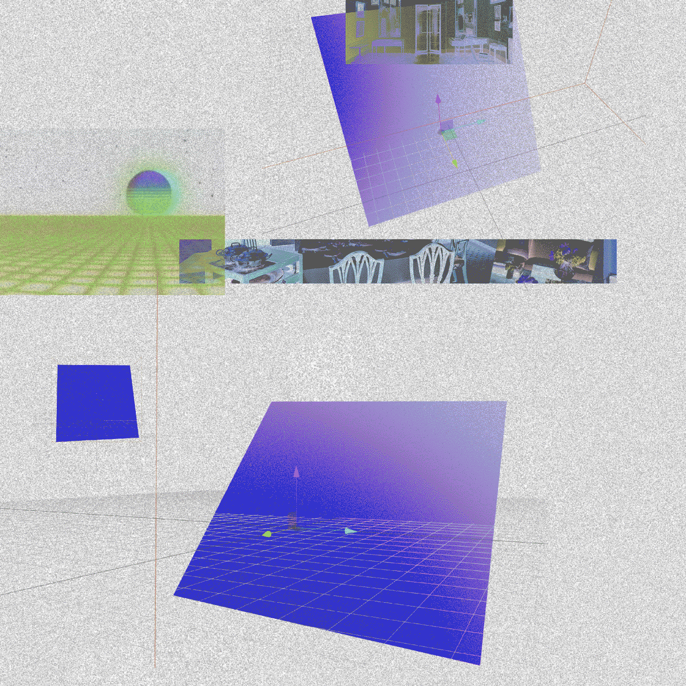
2020–2022